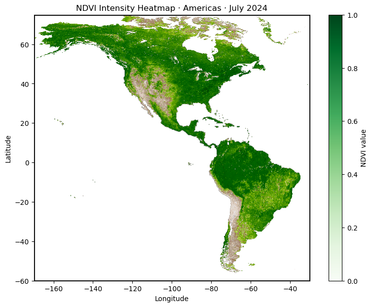
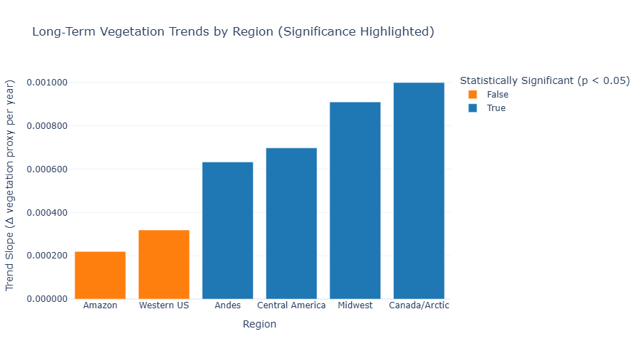
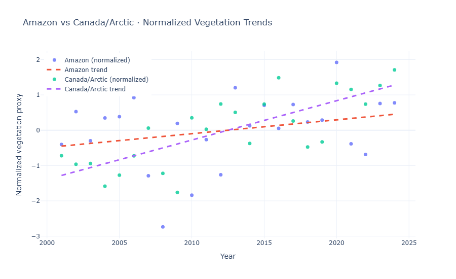

Satellite data spanning 25 years shows a broad greening signal across the Americas. But the trend is not equally strong everywhere. The Amazon remains one of the greenest places on Earth — yet compared with faster-greening regions, its long-term momentum is weak.

NASA's MODIS instrument has been measuring the Normalized Difference Vegetation Index (NDVI) every month since March 2000, producing a continuous record of plant life across the entire planet — forests, grasslands, and croplands alike.
NDVI measures the ratio of reflected near-infrared to red light. Healthy, dense vegetation absorbs red and reflects infrared — yielding values near 1. Bare soil and water hover near 0. The color scale below maps yellow-greens to sparse cover, deep greens to dense canopy.
High NDVI in a single month tells us vegetation is dense right now. It says nothing about whether that density is growing, stalling, or eroding over years. To understand trajectory, we need to look at the slope of the entire 25-year record.


When we fit a linear trend across the full monthly NDVI record for each region, every region shows a positive slope. At the broadest level, the story is greening: vegetation is increasing, growing seasons are lengthening, and plant cover is gaining ground.
All slopes positiveStatistical significance (p < 0.05) separates strong trends from patterns that may still be noise. Canada/Arctic, the Andes, Central America, and the Midwest clear this threshold. The Western US and the Amazon also slope upward, but their increases are not strong enough to be statistically confirmed.
4 significant 2 uncertainSome regions are greening quickly, helped by longer growing seasons, agricultural intensification, or vegetation expanding into previously colder landscapes. Others move only slightly upward. That means the important question is no longer just whether NDVI is increasing — it is how strongly, and with how much confidence.
Indexed to 2000, Canada/Arctic's NDVI climbs clearly over the record. The Amazon's line, by comparison, is nearly flat. Both regions may be green, but their momentum is not the same.
Every region is getting greener.
But the Amazon, one of the greenest places on Earth, is barely gaining ground.
The story is not vegetation loss. It is stalled momentum.
NDVI snapshots show the Amazon as one of the greenest places on Earth: dense, dark, and green year-round. But high baseline vegetation can hide whether the forest is actually gaining strength over time.
Amazon basin · weak momentumThe Amazon's greenness is partly a baseline: it begins the record as a dense tropical forest. The slope asks a different question — not how green it is today, but whether it is becoming greener, holding steady, or falling behind the pace of change elsewhere.
Scrub through the 25-year NDVI record, zoom into any region, and compare two months side by side. Hover any pixel to reveal its local vegetation proxy, or highlight a custom region to view its trend, slope, and statistical significance. The Amazon's stalled momentum becomes clearer when you compare it directly against faster-greening regions.